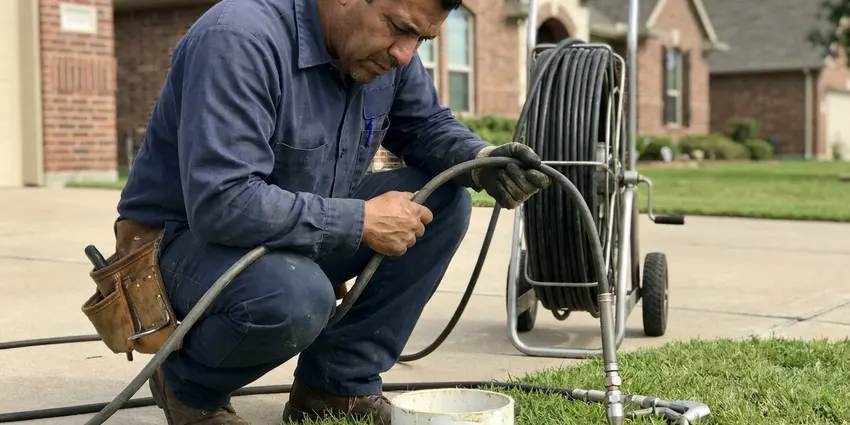

Polybutylene Plumbing Replacement in Dallas, TX
Don't wait for a burst pipe. Get peace of mind with a full polybutylene pipe replacement from DFJ Plumbing in Dallas, TX.
- Fast Leak Detection
- Expert Pipe Replacement
- Code Compliant Work
- Warranty Protected

Upgrade Your Plumbing System with Polybutylene Replacement in Dallas, TX.
Contact us for a free estimate and discover the DFJ Plumbing difference today.
Specialized Polybutylene Plumbing Replacement Services in Dallas, TX
DFJ Plumbing provides expert polybutylene plumbing replacement for homeowners across Dallas, TX. This gray or blue plastic piping, often found in homes built during a specific era, is prone to failure due to its reaction with common water disinfectants like chlorine.
Our expertise includes:
- Full home repiping with PEX or copper.
- Accurate leak detection for polybutylene systems.
- Adherence to all Texas plumbing codes.

Additional Plumbing Maintenance Services in Dallas, TX
Our maintenance and specialty plumbing services in Dallas, TX protect your home year-round and extend the life of every system.


Customers
Why Choose DFJ Plumbing for Polybutylene Plumbing Replacement in Dallas, TX?
Polybutylene pipes are a ticking time bomb for many Dallas homeowners, often failing without warning and causing extensive water damage.
- Prevent Leaks, Proactive replacement prevents costly water damage and mold issues.
- Increase Value, Modern plumbing systems enhance your home's market value and buyer confidence.
- Peace of Mind, Enjoy reliable water flow without the constant worry of pipe failure.
Citywide Coverage
From downtown Dallas to the surrounding suburbs, our crews are dispatched efficiently to provide timely and effective plumbing solutions for your home.
Experienced Team
Our team of licensed plumbers has extensive experience specifically with polybutylene plumbing replacement, having completed numerous projects in Dallas homes.
Safety-First Approach
We meticulously follow all local and state plumbing codes, ensuring that your new plumbing system is not only durable but also meets the highest standards of safety and integrity.
Trusted Certified Dallas Plumbing Services Professionals
At DFJ Plumbing, we take pride in providing licensed, certified plumbing services throughout Dallas, TX. Backed by recognized industry credentials, our experienced plumbers combine technical skill with genuine customer care. Whether it is repair, installation, or maintenance, we follow strict safety and quality standards to deliver long-lasting results you can trust.
Call Us Now PHCC Plumbing Contractor Recognition
PHCC Plumbing Contractor Recognition Better Business Bureau (BBB) Accreditation
Better Business Bureau (BBB) Accreditation Angi Certified Pro
Angi Certified Pro ISO 9001 Quality Management Certification
ISO 9001 Quality Management CertificationReliable Polybutylene Plumbing Replacement Services in Dallas, TX
Full Home Repiping with PEX in Dallas
Many Dallas homes with polybutylene pipes were built on slab foundations, making repiping a complex process. Our team specializes in full home repiping using PEX (cross-linked polyethylene), a flexible, durable, and corrosion-resistant material. PEX is an excellent choice for Texas homes, as it resists freezing better than rigid pipes and expands to accommodate temperature changes. We carefully plan the repipe to minimize disruption, often running new lines through attics or existing wall cavities, ensuring a complete and long-lasting upgrade for your entire plumbing system.

Copper Repiping Solutions in Dallas, TX
For homeowners in Dallas, TX who prefer traditional materials, we also offer full polybutylene pipe replacement with copper. Copper piping is known for its longevity, resistance to bacterial growth, and proven track record. While more rigid than PEX, modern copper installations are highly durable and provide excellent water pressure. Our plumbers are skilled in meticulous copper soldering and installation, ensuring a robust and reliable plumbing system that will last for decades, often outliving the home itself when properly maintained.
Detecting Polybutylene Leaks in Dallas
Even small, hidden leaks from polybutylene pipes can cause significant damage to your Dallas home's foundation or interior. Our technicians use advanced leak detection equipment, including acoustic sensors and thermal imaging, to pinpoint the exact location of leaks without destructive guesswork. We can identify leaks in walls, under slabs, and behind appliances, providing an accurate assessment before any replacement work begins. Early detection is key to preventing widespread water damage and costly repairs in Texas homes.
Emergency Polybutylene Pipe Repair in Dallas, TX
A burst polybutylene pipe is an emergency that requires immediate attention, especially in Dallas, TX where water damage can be extensive. DFJ Plumbing offers emergency services to address sudden pipe failures. While a full replacement is the long-term solution, we can provide temporary repairs to stop the flow of water and mitigate damage, securing your property until a comprehensive repipe can be scheduled. Don't hesitate to call us if you experience a sudden leak or burst pipe.
Understanding Polybutylene Failure in Dallas
Polybutylene's inherent weakness stems from its chemical reaction with oxidants like chlorine, commonly used in Dallas's municipal water treatment. Over time, this reaction causes the pipes and their plastic fittings to become brittle, leading to hairline cracks and eventual rupture. Texas's harder water can also exacerbate this degradation. Understanding this failure mechanism is crucial for diagnosing issues and recommending the most effective and permanent replacement strategy for your home.
Polybutylene to PEX Transition in Dallas, TX
Transitioning from polybutylene to PEX is a popular and cost-effective solution for many homeowners in Dallas, TX. We utilize specialized transition fittings and techniques to seamlessly connect your existing main water line to the new PEX system. This ensures a watertight and code-compliant connection, providing a complete upgrade to a modern, durable plumbing material throughout your home's interior. This transition offers the benefits of PEX without the need for extensive excavation or disruption to your main service line.
Code Compliance and Permits in Dallas
Any major plumbing replacement in Dallas, including polybutylene repiping, requires adherence to local building codes and often necessitates permits. DFJ Plumbing handles all aspects of permitting and ensures that every replacement project meets or exceeds Dallas and Texas plumbing regulations. This guarantees that your new plumbing system is safe, properly installed, and passes all necessary inspections, protecting your investment and ensuring the long-term integrity of your home's infrastructure.

The Cost of Polybutylene Replacement in Dallas, TX
The cost of polybutylene plumbing replacement in Dallas, TX varies based on factors like home size, foundation type, and choice of material (PEX vs. copper). While an initial investment, it prevents potentially catastrophic and more expensive water damage repairs down the line. We provide transparent, detailed estimates, breaking down labor, materials, and any necessary permits, ensuring you understand the value and long-term savings of upgrading your home's plumbing system. We also discuss financing options to make this essential upgrade more accessible.
Polybutylene Plumbing Replacement Near Me in Dallas, TX
If you're searching for 'polybutylene plumbing replacement near me' in Dallas, TX, DFJ Plumbing is your local expert. Our crews are strategically located to provide rapid response and efficient service across the entire metropolitan area.
We understand the unique challenges of Texas homes and are equipped to deliver top-tier plumbing solutions right to your neighborhood. Trust DFJ Plumbing for reliable service that's always nearby.
DFJ Plumbing at a Glance
- Fully licensed plumbing team covering Dallas, TX
- 24/7 emergency service with same-day scheduling
- Clear written estimates, no hidden fees
- 4.9-star rated by 812+ Texas customers
Dallas Map
Dallas Information
- Population
- 1,302,868
- Area codes
- 214/469/972
- Service area
- Dallas and communities within 40 miles
- Nearby
- Mesquite, Garland, Irving, Richardson
Polybutylene plumbing replacement is especially critical for homes in Dallas, TX due to the region's climate-induced stress on plumbing and the common prevalence of this problematic piping in older Texas housing stock.
Expert Services
Trust our professionals for reliable DFJ Plumbing solutions in Dallas, TX.
Our Specialized Plumbing Services in Dallas, TX
At DFJ Plumbing, we provide a complete range of plumbing services across Dallas, TX. From leak detection to full system installations, our team ensures fast, precise, and affordable service for both residential and commercial properties. Explore our core services below:


How Our Polybutylene Plumbing Replacement Process Works in Dallas, TX
Our polybutylene plumbing replacement process is designed for efficiency and minimal disruption to your Dallas, TX home.
Request a Quote
Contact DFJ Plumbing at (737) 405-5978 to schedule an on-site assessment. We'll evaluate your current plumbing system and discuss your replacement options.
Detailed Assessment
Our expert plumbers perform a thorough inspection, identifying all polybutylene pipes and potential issues. We then provide a comprehensive, transparent quote.
Efficient Replacement
Once approved, our team meticulously removes old polybutylene pipes and installs new PEX or copper plumbing. We work efficiently to minimize inconvenience.
Frequently Asked Questions About Polybutylene Plumbing Replacement in Dallas
The cost for polybutylene plumbing replacement in Dallas can range from $4,000 to $15,000 or more, depending on the size of your home, the chosen material (PEX is generally less expensive than copper), and the complexity of the installation, especially with slab foundations. We provide detailed, upfront estimates after a thorough inspection.
We use high-quality, industry-leading brands for our replacement materials, such as Uponor AquaPEX or Viega PEX for PEX systems, and reputable manufacturers for copper piping. We ensure all materials meet or exceed industry standards for durability and performance.
Both PEX and copper are excellent choices. PEX is flexible, less expensive, more freeze-resistant, and ideal for Texas's expansive soils. Copper offers superior rigidity, a long lifespan, and a strong track record. The 'better' choice depends on your budget, preferences, and home's specific needs.
A typical full home repipe for polybutylene plumbing usually takes between 3 to 5 days. Factors like home size, number of fixtures, and ease of access to existing pipes can influence the timeline. Our team works diligently to complete the project efficiently while maintaining quality.
DFJ Plumbing stands behind our work with comprehensive warranties on both materials and labor for polybutylene plumbing replacement. The specific warranty details will be outlined in your service agreement, providing you with peace of mind for your new plumbing system.
Yes, a permit is typically required for a full home repipe in Dallas. This ensures that the work complies with local plumbing codes and is inspected for safety and quality. DFJ Plumbing handles all necessary permitting and inspections for you.
While a full repipe involves some disruption, our team works efficiently to minimize inconvenience. We cover your home, clean up daily, and can often restore water service each evening. We'll discuss the schedule in detail to plan around your family's needs.
Texas is known for its hard water, which contains high mineral content. While hard water doesn't directly cause polybutylene to fail like chlorine does, it can contribute to scale buildup within the pipes. This buildup can reduce water pressure and potentially exacerbate issues if the pipe material is already compromised.
What People Are Saying About Our Plumbing Experts?

Patricia H.
We had a slab leak that two other companies could not find. DFJ Plumbing located it in under an hour, explained our options, and the price matched the quote to the dollar.
Slab Leak Repair · Mesquite, TX
James P.
Our commercial plumbing system had a leak under the sink, and DFJ Plumbing handled it professionally. The plumbers arrived quickly and restored everything without disruption to our customers.
Commercial Plumbing · Dallas, TX
Daniel K.
A pipe burst at 11 pm and they actually answered. The plumber showed up within the hour, shut everything down, and had us back to normal the next morning. Could not ask for more.
Emergency Plumbing · Dallas, TX
Laura S.
I scheduled a water heater replacement, and the team made the process smooth and affordable. The new unit works perfectly, and they cleaned up after completing the job.
Water Heater Replacement · Dallas, TX
Emily R.
I called DFJ Plumbing for plumbing repair, and the technician was fast, polite, and thorough. They explained the problem clearly and fixed it the same day. I will definitely hire them again. Highly recommended!
Plumbing Repair · Mesquite, TXRobert G.
The trenchless sewer replacement saved our front yard. They walked us through the camera inspection footage first so we knew exactly what we were paying for.
Sewer Line Replacement · Dallas, TX